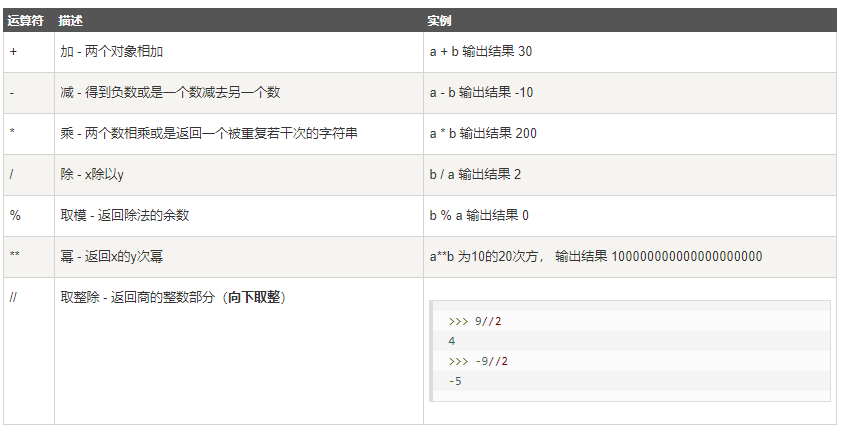
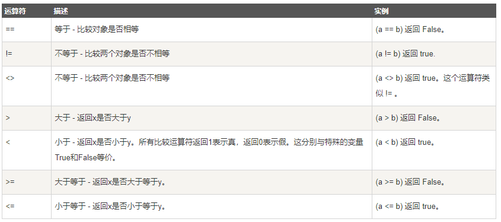
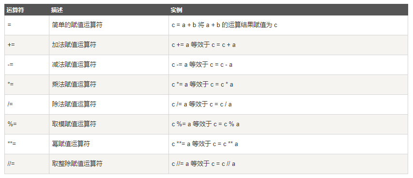
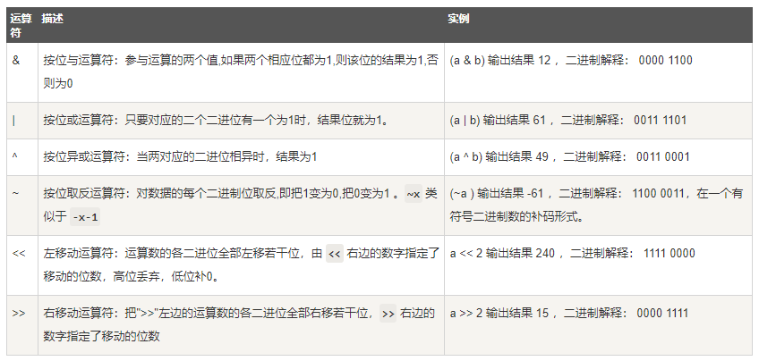
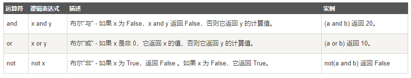
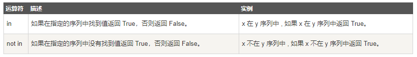
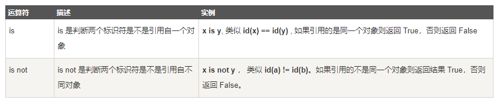
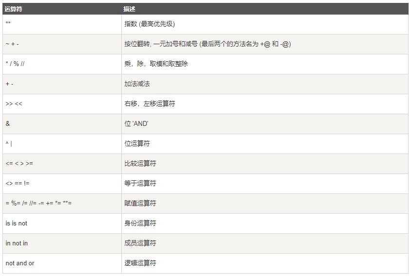

本章节主要说明Python的运算符。举个简单的例子 4 +5 = 9 。 例子中，4 和 5 被称为操作数，"+" 称为运算符。
Python语言支持以下类型的运算符:
算术运算符
比较（关系）运算符
赋值运算符
逻辑运算符
位运算符
成员运算符
身份运算符
运算符优先级
接下来让我们一个个来学习Python的运算符。
以下假设变量： a=10，b=20：

注意：Python3.x 里，整数除整数，得到的是浮点数。
>>> 1/3 0.3333333333333333 >>> 4/2 2.0
>>>3.25 // 1.5
2.0 #类型自动升级
以下假设变量a为10，变量b为20：

以下假设变量a为10，变量b为20：

按位运算符是把数字看作二进制来进行计算的。Python中的按位运算法则如下：
下表中变量 a 为 60，b 为 13，二进制格式如下：
a = 0011 1100
b = 0000 1101
-----------------
a&b = 0000 1100
a|b = 0011 1101
a^b = 0011 0001
~a = 1100 0011
Python语言支持逻辑运算符，以下假设变量 a 为 10, b为 20:

除了以上的一些运算符之外，Python还支持成员运算符，测试实例中包含了一系列的成员，包括字符串，列表或元组。

身份运算符用于比较两个对象的存储单元

以下实例演示了Python所有身份运算符的操作：注： id() 函数用于获取对象内存地址。
is 与 == 区别：
is 用于判断两个变量引用对象是否为同一个(同一块内存空间)， == 用于判断引用变量的值是否相等。
>>> a = [1, 2, 3] >>> b = a >>> b is a True >>> b == a True >>> b = a[:] >>> b is a False >>> b == a True
以下表格列出了从最高到最低优先级的所有运算符：

以下实例演示了Python所有运算符优先级的操作：
a = 20
b = 10
c = 15
d = 5
e = 0
e = (a + b) * c / d #( 30 * 15 ) / 5=90
print "(a + b) * c / d 运算结果为：", e
e = ((a + b) * c) / d # (30 * 15 ) / 5=90
print "((a + b) * c) / d 运算结果为：", e
e = (a + b) * (c / d); # (30) * (15/5)=90
print "(a + b) * (c / d) 运算结果为：", e
e = a + (b * c) / d; # 20 + (150/5)=50
print "a + (b * c) / d 运算结果为：", e